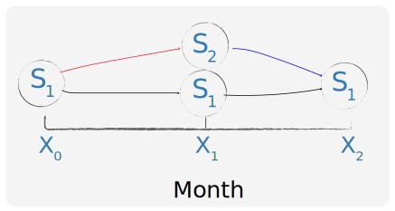

MODELOS DE PÉRDIDA INCURRIDA Y
PÉRDIDA ESPERADA EN EL MARCO NIC 39 - NIIF 9
INTRODUCCIÓN
- Nuevas reglamentaciones con respecto a la clasificación y medición de instrumentos financieros entrarán en rigor el 1 de enero de 2018. Sin embargo, se permite su aplicación previa.
NIIF 9 Instrumentos Financieros reemplazará
NIC 39 Instrumentos Financieros: reconocimiento y medición
- En la regulación actual (lineamientos de NIC 39) sólo las pérdidas incurridas son reportadas en el estado de resultados.
- Los nuevos lineamientos de NIIF 9 requieren una transición a un modelo de pérdida esperada, en el cual se reconocen las expectativas de pérdidas en los créditos otorgados.
CONTENIDO
- INTRODUCCIÓN
- APLICABILIDAD
- MODELO DE PÉRDIDA INCURRIDA – NIC 39
- RAZONES PARA LA TRANSICION AL NUEVO MODELO
- PROPÓSITO Y ÁMBITO DEL MODELO NUEVO
- MODELO DE PÉRDIDA ESPERADA – NIIF 9
- COMPARACIÓN DE LOS MODELOS
- MODELACION DE FLUJOS DE CAJA ESPERADOS
- CONSISTENCIA DEL REPORTE
- RETOS
- EJEMPLO
- CONCLUSIONES
APLICABILIDAD
Entidades con activos a coste amortizado y todos los instrumentos financieros sujetos a contabilidad por deterioro:
- Empresas comerciales e industriales con créditos por ventas
- Inversiones en activos financieros con el fin de gestionar su liquidez
- Compañías de seguros que invierten dinero en activos financieros para cubrir sus pasivos por seguros
ACTIVOS IMPLICADOS
- Activos de tasa fija
- Activos de tasa variable
- Contabilidad de coberturas
- Activos financieros rotativos
- Créditos por ventas
- Cuentas por cobrar de arrendamientos
- Activos financieros colateralizados
- Activos financieros de garantía
MODELO DE PÉRDIDA INCURRIDA – NIC 39
- El VAN inicial es calculado únicamente a partir de los flujos de efectivo contractuales esperados sin tener en cuenta las posibles pérdidas crediticias.
- Las pérdidas esperadas no se reconocen en el estado de resultados.
- Sólo se tienen en cuenta las pérdidas incurridas por deterioro para calcular cambios en el valor del activo reportado en libros.
- NIC 39 utiliza una definición ligeramente modificada de lo que tradicionalmente se considera una pérdida por deterioro.
- Por ejemplo, una reducción de la calificación de crédito, normalmente sería motivo para ser considerado un deterioro (y la reducción en el VAN del activo debido a la reducción implícita en el valor presente de los flujos futuros de efectivo). Sin embargo, según NIC 39 "la reducción en la calificación crediticia de la entidad no es, por sí misma, evidencia de deterioro".
- Una vez el activo se considera deteriorado, el nuevo valor en libros se calcula con la tasa de interés efectiva en el reconocimiento inicial. Los cambios en la calidad crediticia o cambios en la probabilidad de incumplimiento futuro no se tienen en cuenta.
- Por ejemplo, dos pagos atrasados posiblemente aumenten la probabilidad de incumplimiento, sin embargo el VAN no se ajusta como corresponde.
Causas objetivas de pérdida
Dificultades financieras del emisor o del obligado
Cuando existe evidencia del impago de los flujos de efectivo futuros debido a dificultades financieras del emisor u obligado.
Incumplimiento de cláusulas contractuales
Incumplimiento de las cláusulas contractuales, tales como impagos o retrasos en el pago de los intereses o el principal.
Concesiones especiales
El prestamista, por razones económicas o legales relacionadas con dificultades financieras del prestatario, otorga al prestatario concesiones o ventajas que en otro caso no hubiera otorgado.
Posible liquidación o reorganización financiera
Es cada vez más probable que el prestatario entre en una situación concursal o en cualquier otra situación de reorganización financiera.
Liquidez del activo
Desaparece el mercado activo para el activo financiero en cuestión, debido a dificultades financieras. Para este reconocimiento no es suficiente el hecho que los instrumentos financieros no vayan a cotizar más. Tampoco es suficiente una rebaja en la calificación crediticia (a menos que se considere conjuntamente tal evidencia con otra información disponible).
Deterioro en grupo de activos financieros
Los datos observables indican que existe una disminución mensurable en los flujos de efectivo estimados futuros en un grupo de activos financieros después del reconocimiento inicial de éstos, aunque la disminución no puede ser identificada todavía entre los activos financieros individuales del grupo, incluyendo entre tales datos:
- Cambios adversos en las condiciones de pago de los prestatarios del grupo
- Condiciones económicas locales o nacionales que se correlacionen con impagos en los activos del grupo
RAZONES PARA LA TRANSICIÓN AL NUEVO MODELO
- Durante la crisis financiera anterior, aumentaron las críticas hacia el modelo de pérdidas incurridas planteado por NIC 39.
- Las pérdidas por deterioro y los cambios subsiguientes en el valor solo pueden ser reportados cuando hay evidencia de que las pérdidas efectivamente han sido incurridas. Las entidades de reporte no están autorizadas para considerar los efectos de pérdidas esperadas.
- El temprano reconocimiento de las pérdidas crediticias podría haber reducido potencialmente la magnitud de los movimientos cíclicos durante la última crisis financiera.
- Analistas e inversionistas argumentan que los resultados financieros producidos por el modelo NIC 39 son generalmente confusos y no proveen suficiente información para comprender las actividades de gestión de riesgos de las empresas.
- El nuevo modelo NIIF 9 provee mayor transparencia de la verdadera posición de los activos financieros.
- Eliminar los factores psicológicos y políticos de las decisiones financieras tomadas por ejecutivos o políticos sería lo mejor para los accionistas o ciudadanos. Actualmente solo las pérdidas incurridas deben ser reportadas, por lo cual hay un incentivo a nunca dejar la deuda alcanzar su punto de maduración, incluso si fuera esta la decisión más prudente.
PROPÓSITO Y ÁMBITO DEL NUEVO MODELO
- Asegurar que un activo no se reporta por un importe que supera su valor real actual.
- Prevenir que la posición financiera y comportamiento de una entidad de reporte sea exagerada.
MODELO DE PÉRDIDA ESPERADA – NIIF 9
- El VAN es calculado a partir de los flujos de efectivo esperados, teniendo en cuenta futuras pérdidas crediticias.
- Son reconocidas las pérdidas por deterioro debido a cambios adversos en las expectativas de pérdida de crédito.
- Las pérdidas por deterioro o las ganancias se muestran en una partida separada en el estado de resultados cuando las expectativas cambian.
- Los flujos de caja esperados y las pérdidas esperadas están sujetas a la reestimación periódica.
- No se incorporan pérdidas inesperadas fuera de un intervalo de confianza determinado.
COMPARACIÓN DE LOS MODELOS
- El modelo de pérdida esperada es mas subjetivo comparado con el modelo de pérdida incurrida, ya que confía significativamente en la estimación del flujo de caja realizado por la entidad de reporte.
- El modelo de pérdida esperada requiere que las entidades utilicen datos pronosticados, buscando incluir las probabilidades de default en el futuro.
- El modelo de pérdida esperada suaviza las pérdidas durante la vida del activo proporcionando una tasa de retorno consistente. Bajo el modelo de pérdida incurrida, la tasa de retorno aparece artificialmente alta al inicio, disminuyendo durante la vida del activo.
MODELACION DE FLUJOS DE CAJA ESPERADOS
Datos de entrada
IASB Exposure Draft propone que se estimen los flujos de caja esperados considerando:
- Todos los términos contractuales del instrumento financiero:
- Prepayments
- Calls
- Opciones similares
- Cuotas pagadas o recibidas entre las partes del contrato que forman parte del tipo de interés efectivo (véase la NIC 18 Ingresos ordinarios) en la medida en que no se incluyen en la medición inicial del instrumento financiero
- Para los activos financieros, se consideran las pérdidas esperadas durante toda la vida del activo
Cálculo de pérdidas esperadas
El cálculo de pérdidas esperadas sobre préstamos existentes debe incorporar estimaciones con base en los eventos de pérdida pasados y futuros.
Factores a considerar:
- Experiencia histórica de pérdida de crédito (interna-externa)
- Calificaciones crediticias internas o externas
- Reportes externos y estadísticas
- Naturaleza del prestatario
- Producto
- Mercado
- Perspectivas económicas
Manipulación de los datos de entrada
- Los datos históricos deben ajustarse sobre la base de datos actual bservable con el fin de reflejar los efectos de las condiciones presentes.
- La estimación de las cantidades y tiempos de flujo de efectivo deben tener en cuenta modelos probabilísticos.
- Las pérdidas esperadas basadas en los posibles resultados de probabilidad ponderada sólo debe incluir una estimación de la pérdida que puede sufrir basada en lo que se espera que se pierde en promedio, en un horizonte de tiempo específico y en base a las exposiciones históricas.
- El cálculo no incorpora pérdidas por fuera de determinado nivel de probabilidad.
Modelos actuariales y ejemplos de aplicación
Las pérdidas esperadas son reconocidas desde que el activo financiero se origina
Tres niveles:
Nivel 1 ($S_1$):
Inicialmente, las entidades deberán informar sus pérdidas crediticias esperadas para los siguientes 12 meses.
- La probabilidad de incumplimiento de los próximos 12 meses, multiplicada por el total (de por vida) de las pérdidas crediticias esperadas que se derivarían de ese incumplimiento.
Nivel 2 ($S_2$):
El riesgo de crédito aumenta significativamente y la calidad de crédito resultante se considera por debajo del “grado de inversión”. O una vez los pagos tienen más de 30 días de retraso.
En esta etapa las pérdidas crediticias esperadas por toda la vida del préstamo deben ser reconocidas.
Nivel 3 ($S_3$):
Una vez la calidad crediticia de un activo financiero se reduce hasta el punto en que el activo es crédito deteriorado o las pérdidas se consideran incurridas.
De acuerdo a la Superintendencia Financiera de Colombia se entiende por incumplimiento el evento en el cual una operación de crédito presenta por lo menos alguna de las siguientes condiciones:
- Créditos comerciales que se encuentren en mora mayor o igual a 150 días
- Créditos de tesorería en mora
- Créditos de consumo que se encuentren en mora mayor a 90 días
- Créditos de consumo que se encuentren en mora mayor a 90 días
- Créditos de vivienda que se encuentren en mora mayor o igual a 180 días
- Microcréditos que se encuentran en mora mayor o igual a 30 días
Pérdidas crediticias esperadas
Matriz de Rodamiento
Las matrices estocásticas son una estimación de la probabilidad de pasar de un estado crediticio a otro.
Dada la matriz anterior:
Sea $X_0$ una entidad en tiempo cero
¿Cuál es el probabilidad de que en 2 meses la entidad esté en $S_1$ dado que actualmente está en $S_1$?
| $$P(X_2 = S_1 \lvert X_0 = S_1)$$ |  |
| $$P(X_2 = S_1\enspace and \enspace X_1 = S_1 \lvert X_0 = S_1)$$
+ $$P(X_2 = S_1\enspace and \enspace X_1 = S_2 \lvert X_0 = S_1)$$ |
 copy.svg)
|
| $$=>(.90)(.90) + (.10)(.05)$$ $$= 0.815 $$ |
.svg)
|
Cálculo de probabilidades según normatividad
Para activos individuales o portafolios homogéneos fijos:
Inicialmente, un activo estará en $S_1$.
Si se requiere calcular la probabilidad de default en 12 meses, se puede estimar la matriz de transición $M_{12}$, o multiplicar $M_1$ por sí misma 12 veces.
Sin embargo, si el movimiento del activo es hacia $S_2$, (aumento significativo en el riesgo de crédito / más de 30 días de mora) se debe calcular la probabilidad de incumplimiento para toda la vida del activo.
Lo anterior se obtiene con la potencia $t$ de la matriz $M_{n}$, donde $n$ es el período de estimación y $t$ es el número de períodos de vida del activo.
$$ Prob (X_t=j \lvert X_0=i) $$
$$ = (M_{n})^t_{i,j}$$
Para un portafolio, sólo se deben calcular las pérdidas esperadas de toda la vida de los activos que se trasladaron al nivel 2.

Cálculos no homogéneos
Las matrices estocásticas de cada mes varían por diversos factores. Entre ellos:
- Factores económicos
- Tiempo (mes del año)
- Composición del portafolio (afluencia/salida de los préstamos)
En este caso, la estimación de la probabilidad de default en 12 meses esta dada por:
$$ M_{12} = M_{Jan}.M_{Feb}.M_{Mar}...M_{Dic}$$
Las probabilidades halladas en las matrices anteriores pueden ser obtenidas a partir de datos históricos de transición, de un perfil de tipo y riesgo similar.
Sin embargo, estas probabilidades deben ajustarse de acuerdo a los cambios de la normatividad.
Ejemplo

Cálculo de pérdida esperada

Más allá de los requerimientos
- Es posible predecir la composición de un portafolio en el futuro.
- El modelo de Markov implica independencia entre transiciones y elementos del portafolio. Otros modelos pueden ser empleados para realizar tests de estrés de ciertos eventos o situaciones que podrían tener implicaciones más significativas que las que puede mostrar un modelo Markov. El nivel de concentración del riesgo puede ser ajustado de acuerdo a la tolerancia al riesgo de cada entidad o a la regulación establecida por Basilea III.
- VaR .99
- Conditional VaR
Precisión del modelo
- La estimación de pérdidas esperadas utilizando un enfoque de probabilidad ponderada en grandes portafolios de activos financieros homogéneos es más precisa que el cálculo para los activos individuales.
- Es importante ajustar las probabilidades de riesgo empleando pronósticos e información macroeconomica, de modo que se reflejen las condiciones actuales y las estimaciones sean sensibles a las fuentes pertinentes de riesgo de crédito.
- Las confrontaciones periódicas de los resultados reales contra los pronósticos son fundamentales para poner a prueba la metodología empleada.
CONSISTENCIA DEL REPORTE
El juicio y la discrecionalidad desempeñan un papel fundamental en la estimación de las pérdidas crediticias esperadas. Esto puede dificultar la interpretación de agentes externos.
Adicionalmente, las estimaciones de la entidad y el cálculo de las pérdidas esperadas pueden diferir de las estimaciones realizadas por el regulador.
Retos
Los datos deben recopilarse para todos los portafolios. Las matrices de transición requieren gran cantidad de muestras en cada una de las celdas para extraer conclusiones significativas.
Las entidades pueden tener dificultades con la extrapolación de datos. Las recomendaciones del Comité de Basilea requieren sólo un año de información sobre las pérdidas esperadas, mientras NIIF 9 requiere información hasta la madurez del activo.
CONCLUSIONES
- El modelo de pérdida esperada requiere amplio conocimiento y experiencia en la estimación de probabilidades de incumplimiento. Introducir múltiples variables en modelos complejos será un reto para las entidades.
- Sin embargo los costos extra y los recursos asociados a la estimación de pérdidas esperadas, serán ampliamente superados por los aspectos positivos del cambio: Una mejor gestión del riesgo y la transparencia de la verdadera situación financiera en la que se encuentra la compañía